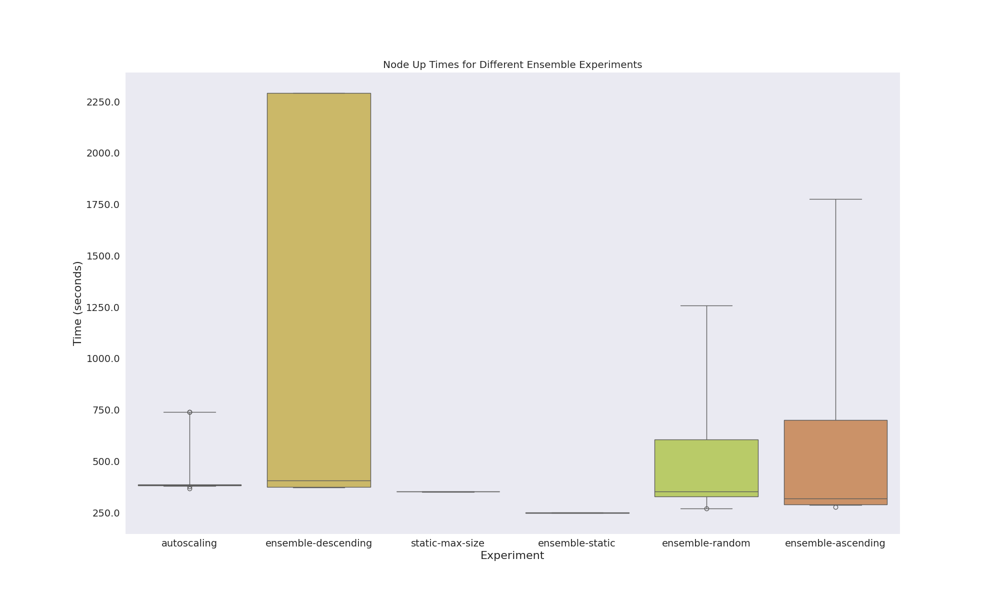
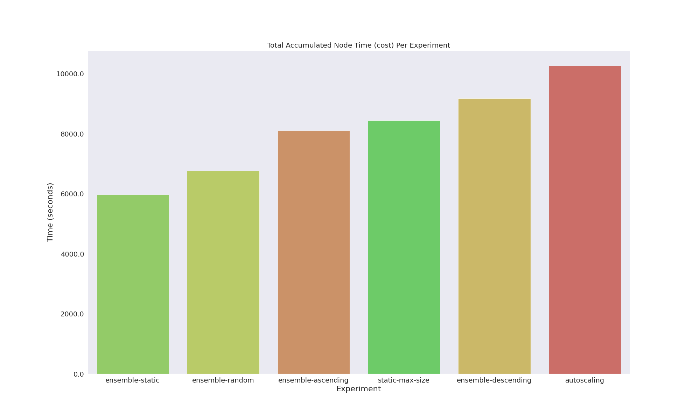
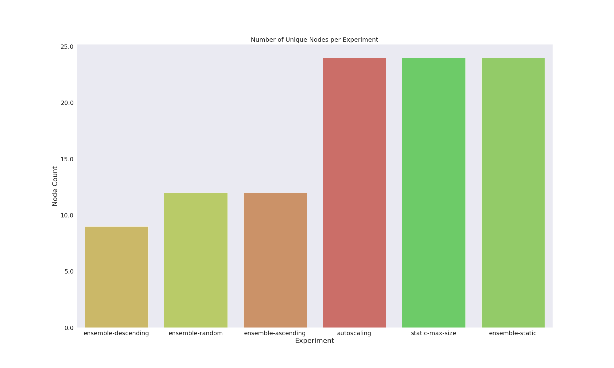
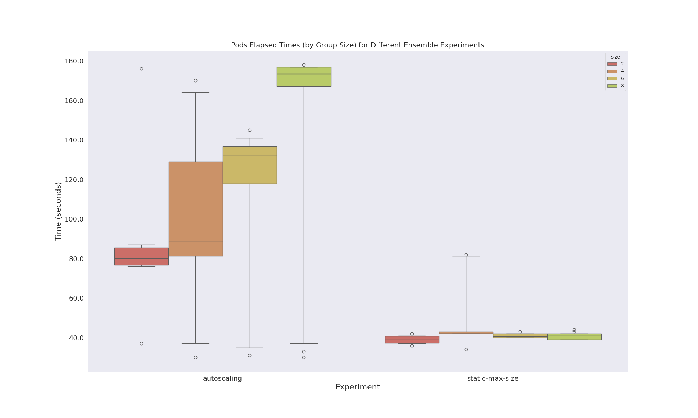
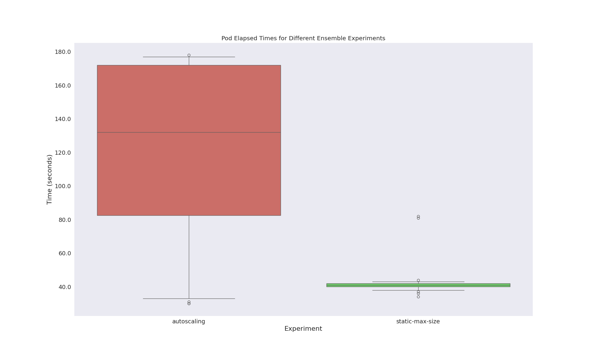

These experiments were run with the ensemble operator. This report interface is under development and will eventually be included as a jekyll template for usage alongside the operator. All results can be found here
Each experiment here is either run with the ensemble operator, where the main Ensemble member is one MiniCluster that submits all the jobs, under control of the Ensemble operator, or the same set of LAMMPS runs with MiniClusters submit a la carte. The advantages to this approach, off the bat, are that using the ensemble operator handles scheduling and job management within a single custom resource, and does not stress etc. Running the same jobs as individual MiniCluster would use etcd and the kube-scheduler for each one. While this prototype just demonstrates small sizes, you can imagine how this might scale. In summary, the design can be described as having two experiment types:
The X axis is a normalized unit of time, meaning each experiment was split into 35 periods. This was largely done for visualization purposes, and means that the size of the bins (a period of time, the entire experiment duration / 35 periods) can be tweaked. It also means the bins are not comparable between experiments, which is OK given that we show plots with more context about total times later. The Y axis is a (cross experiment) lookup for nodes. This means node 5 in one experiment is the same node as another experiment. In practice, only experiments that were run on the same cluster (the non static vs static ones) might have overlapping nodes, and those nodes would be the ones that are scaled down to (the smallest size tended to be 3).
The bins represent the granularity that we chose to show our results. While we do have times down to the second, the granularity depends on the number of bins we choose in the visualization. When a node is found to have disappeared in a bin, this is when it is considered to be removed, even if it might have been present for a small range in the bin. Each experiment required the cluster to return to an initial size of 3 before continuing (enough resources for the operators to be installed and some change). This means that times below include returning to that size and scaling up, but do not include creation or deletion times. For static experiments (those with static- in the name) they were run on the same static cluster (size 24) and also share times. All experiments used c2d-standard-8 (4 cores) on Google Cloud. Select different experiments with the dropdown menu below.
All of the ensemble operator experiments have a startup time. This is the time that it takes to create the Ensemble member (a MiniCluster), establish communication with the sidecar, submit jobs, and then wait for the next reconcile to hit the queue. The initial setup of the sidecar container plus this last variable is likely the most influential - it defaults to 10 seconds. For longer running jobs, I believe this to be a reasonable checking time, if not too frequent. For short running LAMMPS times such as this, it is way too slow. To fairly adjust for this startup time we would need to run more, and longer jobs.
Any static experiment, regardless of running with the ensemble operator, has nodes running across all time periods. This means (generally speaking) that the jobs will have resources faster, but the tradeoff is paying for more nodes up from the getgo.
It's logical to me that random selection or ascending selection (largest jobs first) causes the cluster to scale faster, represented by more nodes coming up sooner. What is not clear to me is why random brings up more nodes sooner than ascending. I think I probably just have a bug - something to do with what the operator is choosing vs. Flux submitting and the queue algorithm - I will look into it! This result is also hugely influenced by parameters you provide to the algorithm. For example, there is a scaling cooldown period, waiting periods for events, and the results would also be subject to the order that was randomly generated. My conclusions here are just that I need to debug and tweak these further, but it's a good first shot. Overall, all of these ensemble approaches represent a more controlled submission.
We can see that the average time a node is up for the ensemble operator experiments is much larger, except for the case when we start with a large cluster. There is also no discernable difference between autoscaling and starting with a static cluster of the maximum size, albeit the total runtime of pods is fairly short. I'm not going to read too much into the different ensemble algorithms because I've concluded they need debugging.

Here is where things start to get interesting, because total accumulated node time is a proxy for cost. Albeit these experiments are short, and despite the plot at the top showing the ensemble operator nodes taking longer to "kick in" and come up, the total accumulated time of the nodes (not including cluster creation and deletion, which should be consistent in either case) actually shows that the ensemble approach is overall shorter. I bet if we fix up and further work on the algorithms themselves we can improve on this more! 
This plot shows that the ensemble operator approaches, overall, don't scale up to quite as many nodes. You can see this also in the plots above via the Y axis, which shows the unique nodes. This is logically because we start at a size 3, and are very controlling about when scaling events occur. Versus the other approaches, either the autoscaler will go up to the maximum immediately, or the static size already starts there.
Note that this data is limited to the static approaches for which I have collected pod times. The ensemble operator, by way of running the same jobs in the queue, would have these running times exposed via flux job info or similar. We will need to think of a fair way to compare the pod running times between an ensemble experiment and MiniCluster a la carte. I likely will do something for a future experiment. For now, we can see that autoscaling seems to lead to longer pod-life times for larger sizes. This is logical because likely a scaling event is triggered by a group member in Pending, and so the entire group (and each pod in it) needs to wait for new nodes to come up.
This is the same plot, but squashing the size. I find the previous figure more interesting.
While the plots above include the time for a cluster to scale up and back down to an original size (for all but static, and the size usually was 3) they do not include cluster creation or deletion times, which were shared by groups of experiments. Specifically, experiments with autoscaling enabled that were not static shared the following times:
This was a satisfying day of work! This work required creating a new, automated experimental setup to run these experiments, updates to Kubescaler for Google Cloud, and the metrics operator itself. I am hoping to improve upon these results to a point I can present them in a few weeks. The scope I am interested in for this work is "work in progress" or early work as opposed to "let's write a paper." I appreciate feedback.